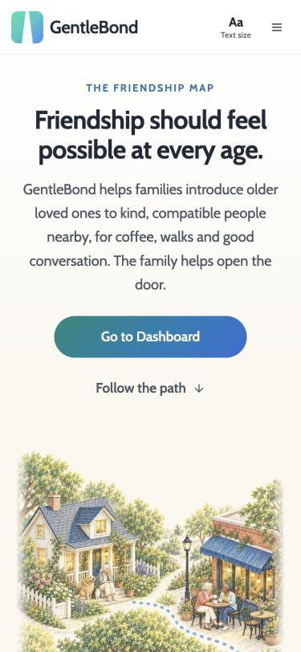
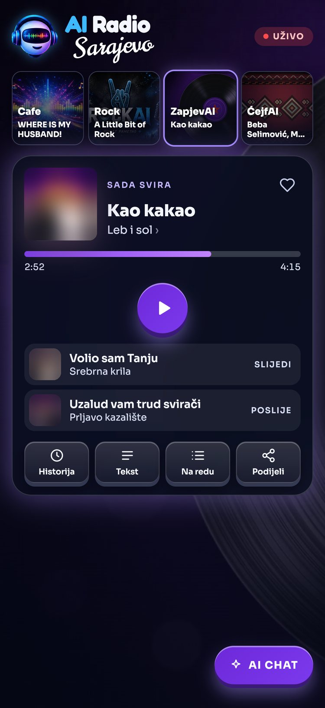

Džemat Izet Nanić
Dornbirn, AustrijaDžemat je plaćao platformu svake godine, a objavljivati je znala samo jedna osoba. Sad odbor sam objavljuje obavještenja, hutbe i vaktiju, a članstvo ide preko stranice.
Iz Sarajeva, za klijente u BiH i dijaspori. Pravim stranice koje poslije sami uređujete i kratke video priče koje pokazuju šta radite.
NedavnoDžemat Izet NanićDr. GanibegovićGentleBondAI Radio Sarajevo
Četiri projekta iz posljednjih mjeseci. Sve su prave stranice koje ljudi svaki dan koriste.
Džemat je plaćao platformu svake godine, a objavljivati je znala samo jedna osoba. Sad odbor sam objavljuje obavještenja, hutbe i vaktiju, a članstvo ide preko stranice.


Nova stranica ortodontske ordinacije. Pacijent kroz interaktivne vodiče vidi kako aparatić radi i koji problem sa zagrizom ima, a ordinaciju zove jednim dodirom.


Aplikacija koja pomaže porodicama da starijim članovima pronađu društvo u blizini, za kafu, šetnju i razgovor. Na projektu radim s timom.


Gradski radio s četiri stanice. Svaka ima svoj izgled, od sevdaha do rocka, uz plejer uživo i AI chat za slušaoce.
Početne cijene. Tačan iznos dogovaramo nakon kratkog razgovora.
Brze stranice koje dobro izgledaju na mobitelu, na jednom ili dva jezika. Nakon predaje sadržaj mijenjate sami.
1/3 unaprijed, ostatak prije predaje · gotovo za 1–2 sedmice · 12 mjeseci garancije · bez mjesečnih troškova
Reelsi, kratke reklame i mjesečni sadržaj za Instagram i Facebook. Snimam na lokaciji u Sarajevu, montiram i isporučujem gotovo za objavu.
U svakom paketu: dogovor o sadržaju, montaža, boja i zvuk, natpisi i logo, licencirana muzika, jedan krug korekcija.
Dodatno: novi reel iz istog materijala 80 KM, dodatna montaža 40 KM/sat, animacije od 30 KM.


Za ove dvije branše imam gotova rješenja i primjere.

Rođen sam u Africi. Poslije sam živio i radio u Aziji, na Bliskom istoku i u Evropi, pa se taj naziv nekako sam nametnuo.
Kroz sve to sam shvatio da ljudi rijetko tačno znaju šta im treba. Znaju da im nešto fali ili da nešto ne radi kako treba, ali to teško opišu. Zato na početku više pitam nego što pričam.
Zanima me puno toga, od historije i nauke do tipografije i toga kako se ljudi snalaze kad otvore neku stranicu. Sve mi to pomaže da napravim nešto što je lako koristiti, a da pritom lijepo izgleda.
Haris Hadrović, osnivač, Cosmopolit Digital
Pošaljite mi vrstu posla, lokaciju i šta vam treba. Odgovaram isti dan.